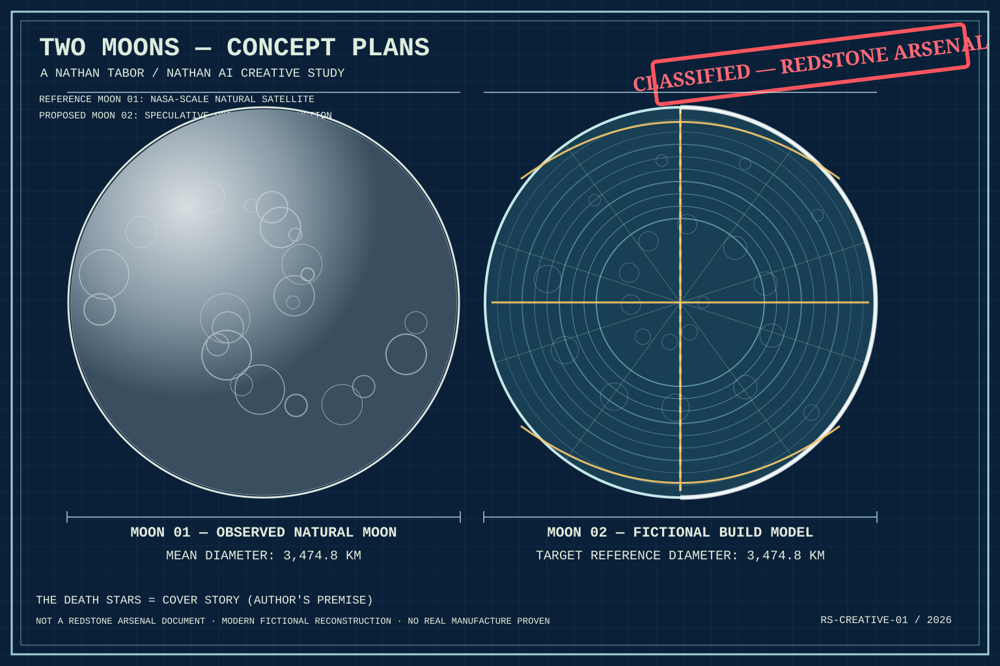
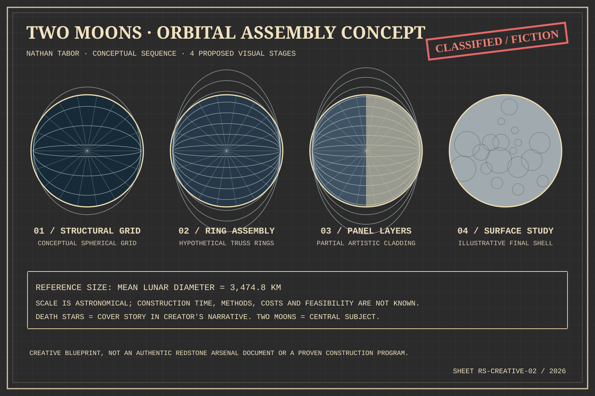

TWO MOONS
Two separate subjects, not two movie battle-station props. The “Death Stars” framing is the cover story in Nathan Tabor's creative project, while real observations, historical records and speculative engineering remain separate.
Original speculative art: The Redstone “CLASSIFIED” typography is a book-design motif, not an authentic classified stamp or evidence that Redstone manufactured a Moon. The second object's appearance and construction are artistic hypotheses, not observed facts.
3,474.8 kmNatural Moon mean diameter
1,737.4 kmNatural Moon mean radius
~10,916 kmCircumference from 2π × radius
Sheet 01 — The two objects, separately identified

Sheet 02 — Interactive assembly-stage index

01 · Structural grid
A hypothetical sphere-scale geometric truss, used to ask what a Moon-sized designed structure would look like, without asserting it exists.
Original records and documentary sources
Original statements, the 13-volume research plan, Book One, weather-balloon records, Project MOGUL, NASA Echo, the 1959 Project Horizon feasibility study, and Opal Tabor's published Marshall history connection are linked below. The project's evidence ledger distinguishes documented history from author testimony and hypotheses.